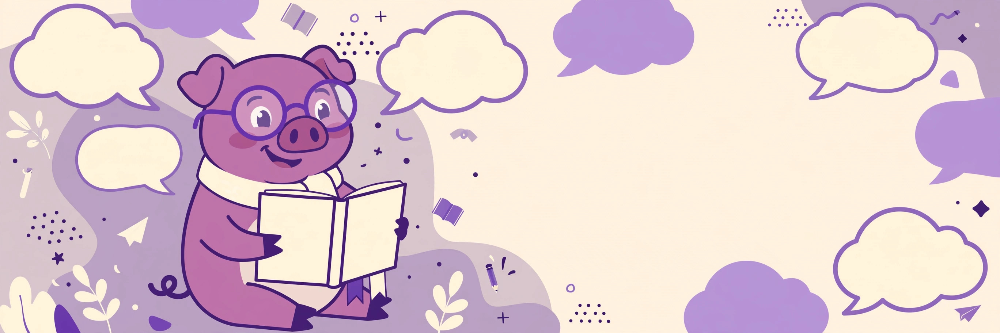

A tiny tool, the rules behind it, and practice lines to try.
Your Pig Latin
Pig Latin is a word game played with English. Players change each word by a fixed set of rules, and the result sounds like a secret code. Friends use it for jokes, notes, and playful chat.
Nobody is born speaking it. Most people pick it up at school or from friends, then teach it on in minutes. Once your ear learns the pattern, you can decode it at talking speed.
Move the starting consonant sounds to the end of the word, then add ay. Pig becomes igpay, and Latin becomes atinlay. A cluster of consonants moves as one piece, so string becomes ingstray and chair becomes airchay.
Leave the word where it is and add way to the end. Apple becomes appleway, and egg becomes eggway. This rule is the easiest one to hear, since the word itself stays whole.
When q and u open a word, they count as one consonant sound. Queen becomes eenquay, and quiet becomes ietquay. Treat them as a pair and the word stays easy to say.
Hello world becomes ellohay orldway.
Thank you becomes ankthay ouyay.
This is fun becomes isthay isway unfay.
Type any of these lines into the tool above and check your reading. Then try a line of your own, like your name or your street. Short lines are best while you learn the rhythm.
No. Pig Latin is a game played on top of English, not a language of its own. It has no grammar, no native speakers, and no set vocabulary beyond the words you feed it.
People have played word games like this in English for well over a hundred years. The modern form spread through schools, camps, and playgrounds. Its exact starting point is lost, which suits a game passed by word of mouth.
Take the ay ending off the word first. Then move the consonant sounds at the end back to the front. Words that end in way and start with a vowel just lose the way.
Nearly every word works with the two main rules. A few words have no a, e, i, o, or u, and players handle those in different ways. Pick the reading that sounds right and keep talking.
Short daily practice beats one long session. Convert one message a day and read it back out loud. Within a week, short lines will feel easy to read and write.
For longer texts, more examples, and a fuller set of tools, visit the Pig Latin translator at Quirky Translators. It handles whole paragraphs in one go and costs nothing to use.